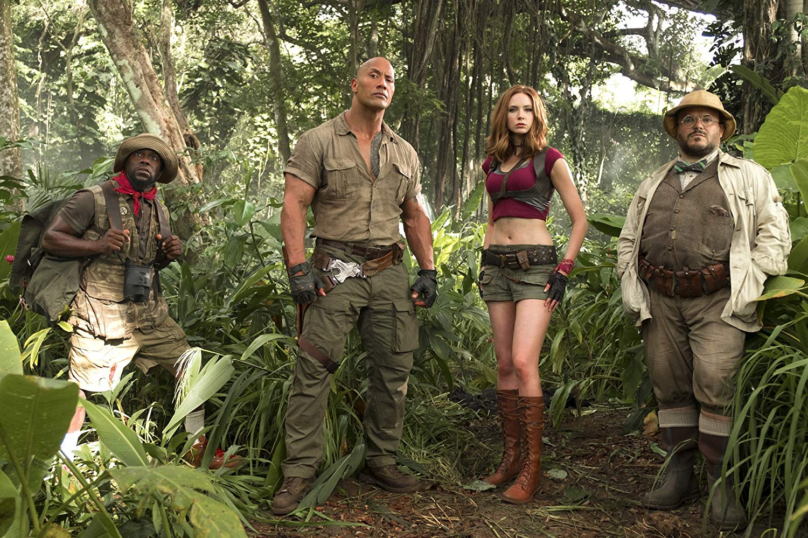
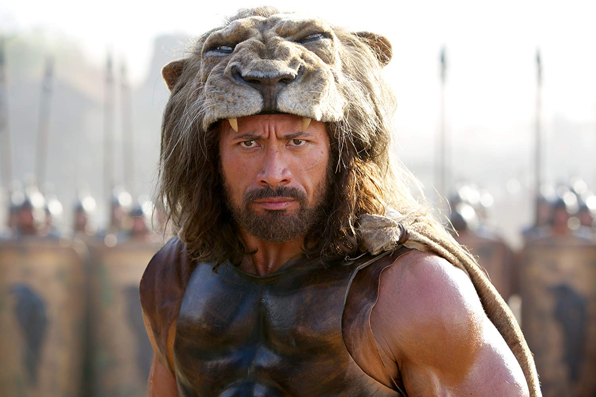

Biography
Dwayne Douglas Johnson, also known as The Rock, was born on May 2, 1972 in Hayward, California. He is the son of Ata Johnson (born Feagaimaleata Fitisemanu Maivia) and professional wrestler Rocky Johnson (born Wayde Douglas Bowles). His father, from Amherst, Nova Scotia, Canada, is black (of Black Nova Scotian descent), and his mother is of Samoan...see full bio
Take a look back at The Rock's career in photos
Jumanji:Welcome To The Jungle –Four teenagers are sucked into a magical video game, and the only way they can escape is to work together to finish the game.

HERCULES –Having endured his legendary twelve labors, Hercules, the Greek demigod, has his life as a sword-for-hire tested when the King of Thrace and his daughter seek his aid in defeating a tyrannical warlord. Director: Brett Ratner Writers: Ryan J. Condal (screenplay by), Evan Spiliotopoulos (screenplay by) | 1 more credit » Stars: Dwayne Johnson, John Hurt, Ian McShane | See full cast & crew »

THE FATE OF THE FARIOUS –When a mysterious woman seduces Dom into the world of terrorism and a betrayal of those closest to him, the crew face trials that will test them as never before. Director: F. Gary Gray Writers: Gary Scott Thompson (based on characters created by), Chris Morgan Stars: Vin Diesel, Jason Statham, Dwayne Johnson | See full cast & crew »

Right
Responsive Web Design adalah sebuah teknik yang digunakan untuk membuat layout website menyesuaikan ukuran lebar layar dari perangkat yang digunakan
RELATED NEWS